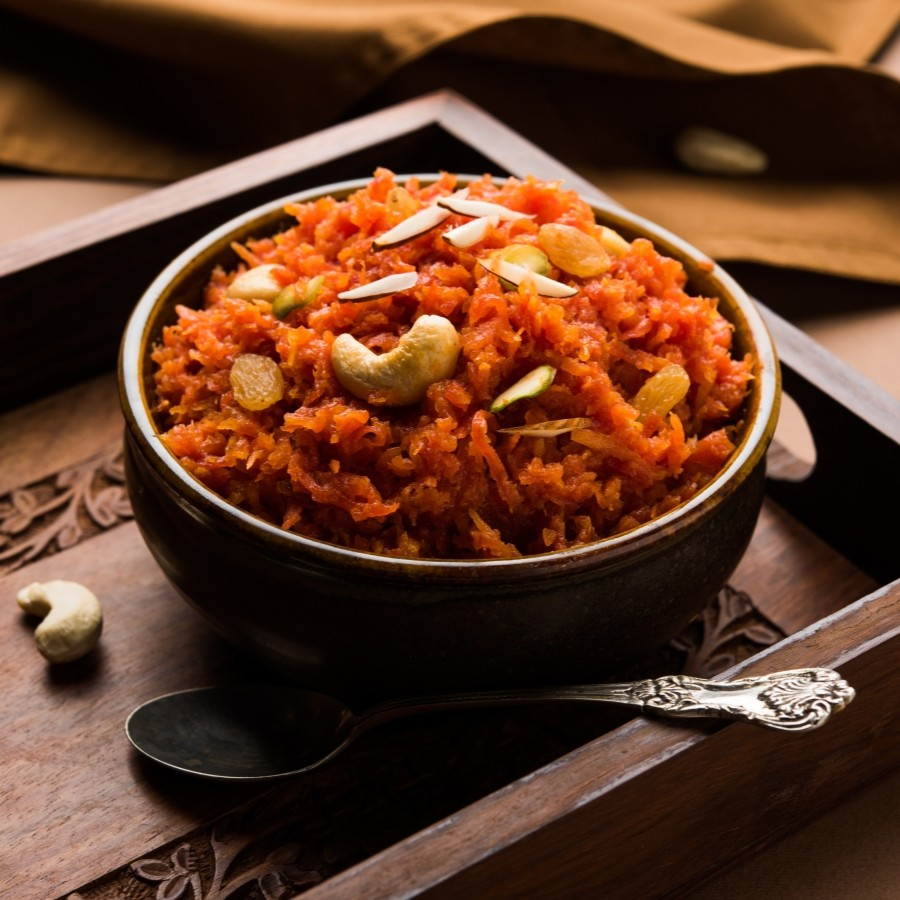
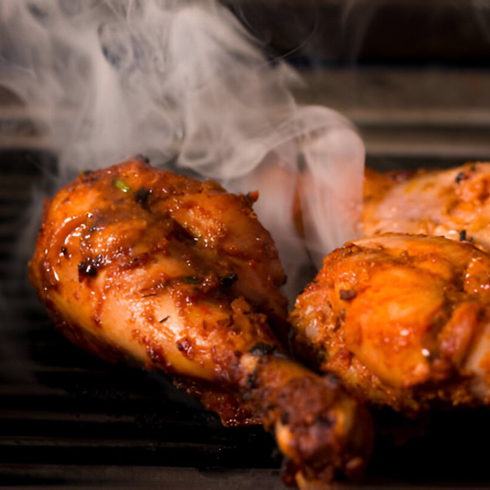
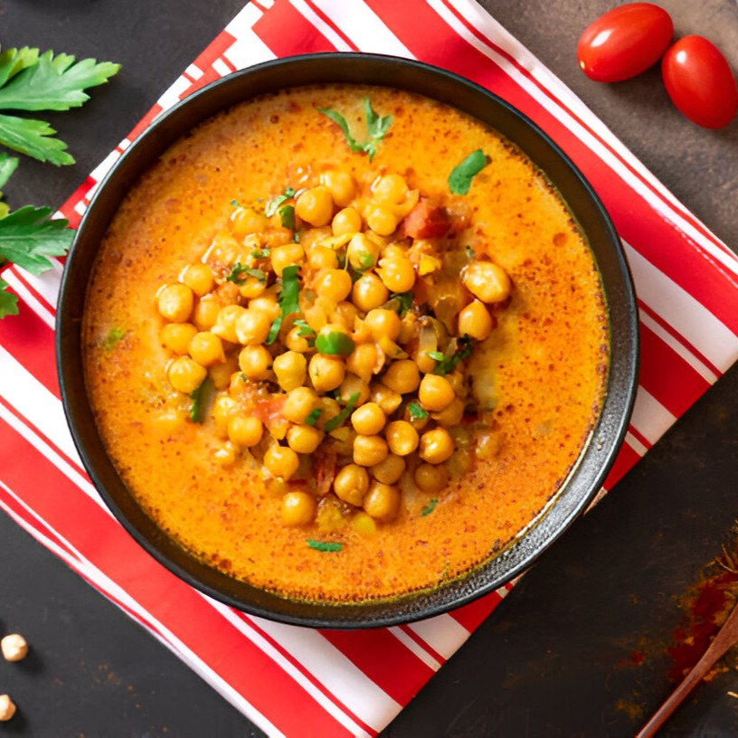
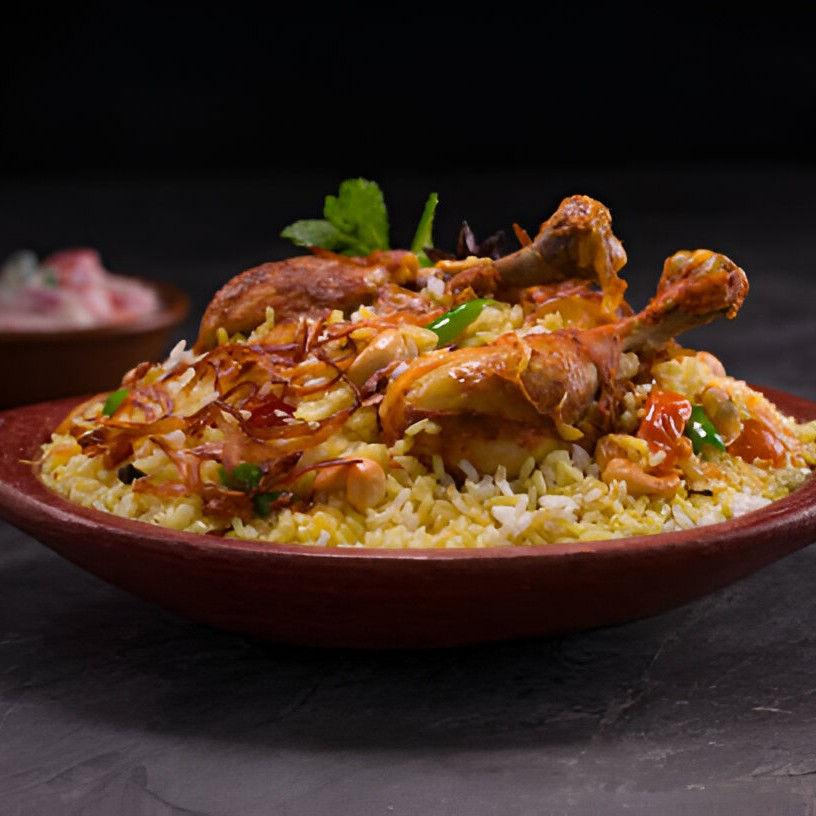

Popular Recipes

Paneer Butter Masala
Duration: 1h 12m
Rating: 4.5
Paneer Butter Masala, also known as butter paneer, is a rich & creamy curry made with paneer.

Carrot Halwa
Duration: 45m
Rating: 4.2
Carrot halwa is a carrot-based sweet dessert pudding made by placing grated carrots in a pot.

Tandoori Chicken
Duration: 2h 00m
Rating: 4.7
Tandoori chicken is a dish made from chicken marinated in yogurt and spices.

Channa Masala
Duration: 35m
Rating: 4.0
Channa masala is a North Indian curried dish made with white chickpeas, onions, and tomatoes.

Chicken Biryani
Duration: 1h 12m
Rating: 4.5
Biryani is a mixed rice dish mainly popular in South Asia. It is mainly made with rice and meat.